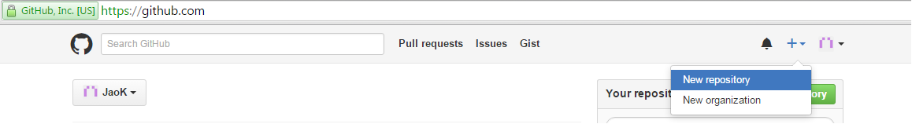
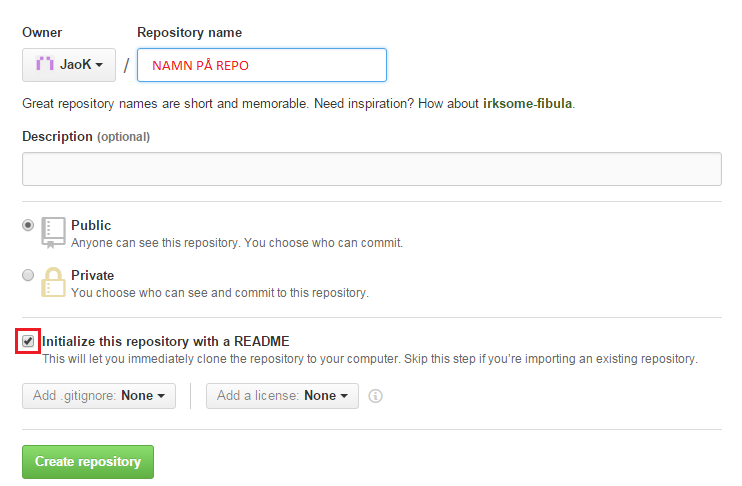

Bra!
Nu har du checkat ut nästa version av sidan och den ser ut såhär.
Nu är det din tur att skriva lite kod och commita i GitShell!
Skapa ett nu repo på GitHub .
(Du kan även använda ett repo du redan har)

Ge sedan ditt repo ett namn och bocka i rutan "Initialize this repository with a README"

Och klicka create.
Snyggt! Nu kan du checka ut nästa version av detta repo!